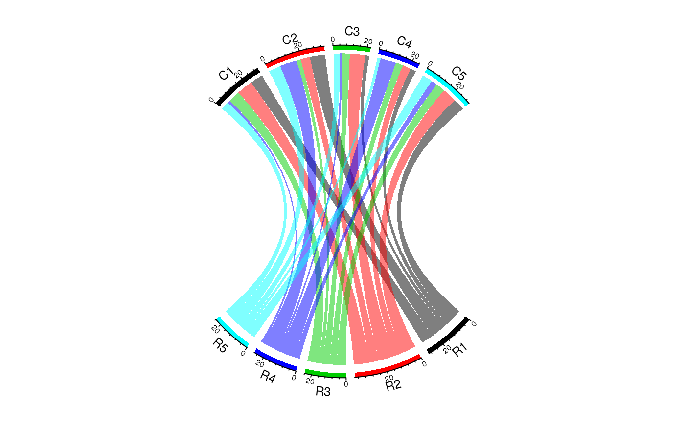
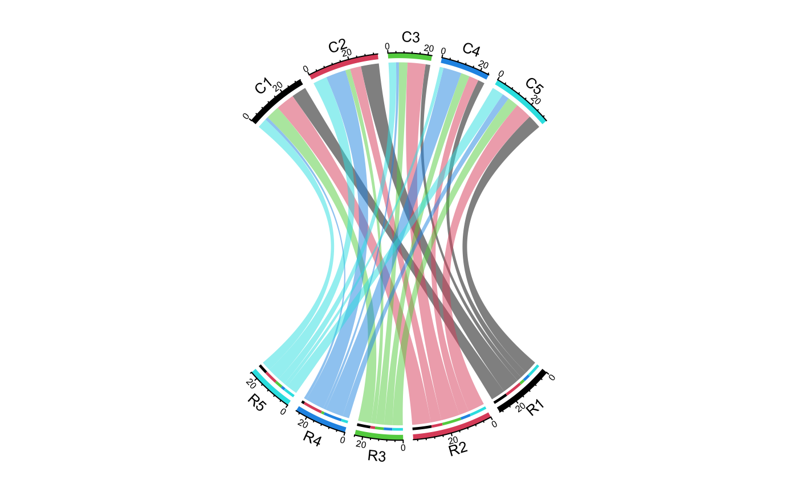

calc_gap.RdCalculate gaps to make two Chord diagrams in the same scale
calc_gap(x1, x2, big.gap = 10, small.gap = 1)
| x1 | The matrix or the data frame for the first Chord diagram. |
|---|---|
| x2 | The matrix or the data frame for the second Chord diagram. |
| big.gap |
|
| small.gap |
|
Both Chord diagrams should be both two-group Chord diagram.
A numeric value which can be directly set to big.gap in the second Chord diagram.
set.seed(123) mat1 = matrix(sample(20, 25, replace = TRUE), 5) chordDiagram(mat1, directional = 1, grid.col = rep(1:5, 2), transparency = 0.5, big.gap = 10, small.gap = 1)mat2 = mat1 / 2 gap = calc_gap(mat1, mat2, big.gap = 10, small.gap = 1) chordDiagram(mat2, directional = 1, grid.col = rep(1:5, 2), transparency = 0.5, big.gap = gap, small.gap = 1)